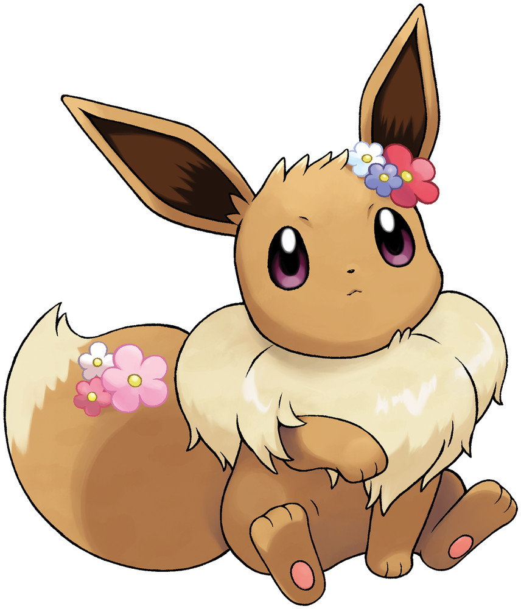

#133 Eevee

It is a rare Pokémon that adapts to harsh environments by changing its appearance and capabilities when it evolves.
#587 Emolga
The energy made in its cheeks electric pouches is stored inside its membrane and released while it is gliding.
#778 Mimikyu

After going to all the effort of disguising itself, its neck was broken. Whatever is inside is probably unharmed, but it’s still feeling sad
#254 Sceptile
The leaves that grow on its arms can slice down thick trees. It is without peer in jungle combat.
#777 Togedemaru
The spiny fur on its back is normally at rest. When this Pokémon becomes agitated, its fur stands on end and stabs into its attackers.
#869 Alcreamie
The cells that compose its cream fluctuated suddenly during evolution, giving the cream a refreshing flavor.
#231 Phanpy
It is strong despite its compact size. It can easily pick up and carry an adult human on its back.
#12 Butterfree

It loves the nectar of flowers and can locate flower patches that have even tiny amounts of pollen.
#358 Chimeecho
Chimecho emits ultrasonic cries. It floats on the wind to travel great distances.